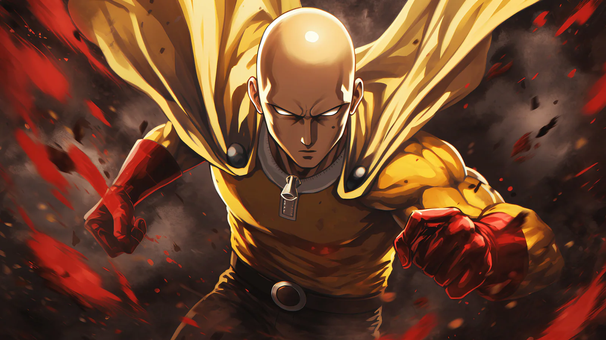
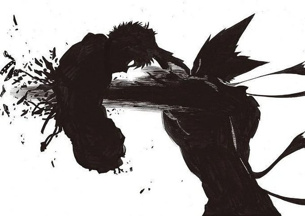

TSB means The Strongest Battleground. And if you like Saitama, then you will like this game!
This game is related to the Anime, Saitama. If you are not familliar with Saitama, here's a picture
The most main character is Saitama, and or / Genos. At the start of the anime, Saitama was really lonely but then he found this guy named "Genos" when they were fighting someone named "Mosquitoe Queen" and Genos was fighting her. Saitama was also fighting her because Saitama is also a hero. They met and Saitama noticed that Genos was actually pretty good at combat as well. Unfortunately, Genos didn't notice Saitama at first but after they fought the Mosquitoe Queen, Genos noticed Saitama. And they started talkiing to each other. And that is how they became friends.
So Garou used to be a normal kid when he was younge but everybody at his school would bully him. People talked about how that superheros ALWAYS win fights. But Garou doesn't belive it. So guess what? You guessed it! Garou trained and trained, and his trainer/master was somebody named "Bang". They trained for years and years. Until finally, Garou was strong enough to fight actual heros and he beat most of them! In one of the episode, Garou was SURROUNDED by heros and he knew he would beat all of them. So he did! Until suddenly, his master, Bang showed up and saw Garou and Bang was extreamly upset that Garou used his powers for bad. So Bang and the other heros fought Garou. But Garou isn't weak! He uses a ultimate move that smashes the ground so hard that everbody near Garou got fling backwords! But Genos showed up and tried to kill Garou by burning him. Even with like 10 heros and his master "Bang" AND another hero named Genos together teaming up to defeat Garou, Garou doesn't give up and breaks Genos's hand so Genos retreats. Leaving Bang, and the remaining heros that didn't get killed by Garou alone. Then I am pretty sure they also escaped.
Then in another episode, Garou met the amazing Saitama! Garou tried his best to defeat Saitama but then got one punched by Saitama in a building! Garou was SHOCKED. He NEVER EVER felt that power going through his body. Garou fled of course. But soon, in one episode, Garou KILLED Genos by ripping out his core while all the heros he fought in previous episodes watched as Garou ripped through Genos's flesh until finally eliminating him. Everybody was really shocked. Even Saitama himself watched as Garou killed Genos. Here's a picture of that happening...
And yeah... Garou has funny looking hair for some reason but that is sad. Like how would you feel if you see someone brutally killing your friend? That is exactly how Saitama felt.
So Saitama charged up his fist and clearly, he was ready for battle. The reason Garou did that is because he wanted Saitama to use his full power because Garou got a power from the gods that is really strong! It can copy its opponet's moves and it is also cool! The name for it is "Cosmic Garou". So of course Saitama used one of his deadly move called "Serious Punch". It can destroy whole entire galaxies! Really, it does I am not lying. But the one he used was one of the weaker version so it didn't really do any harm to the earth. One of the heros whent that was happening, the hero knew that if he didn't get Garou and Saitama out of earth, they will beat up earth really badly. So the hero used one of his move to try and send them to outer space before Saitama and Garou both uses Serious Punch. Just imagine two people using Serious Punches at each other! But that hero wasn't alone! The other heros saw what that hero was trying to do so they wanted to help out the hero that was about to save the lives of billions of people. They all succeed into saving planet Earth.
Garou thought he had won after punching Saitama in the stomach so hard, but he lost instead. Saitama used Serious Fart and flew to where Garou was and Saitama SMASHED Garou down to Earth making a huge shockwave and it was like a metorite the size of about pluto smashed down. And also injuring Garou really really bad. He didn't really die and I know that because after, he became a good person after that incedint with Saitama.
And that is the end of this website! Goodbye!